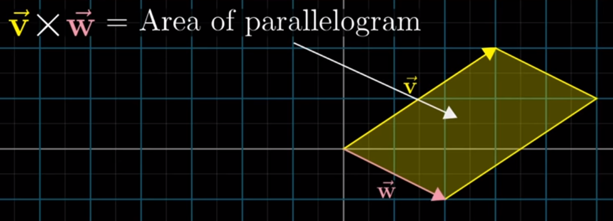
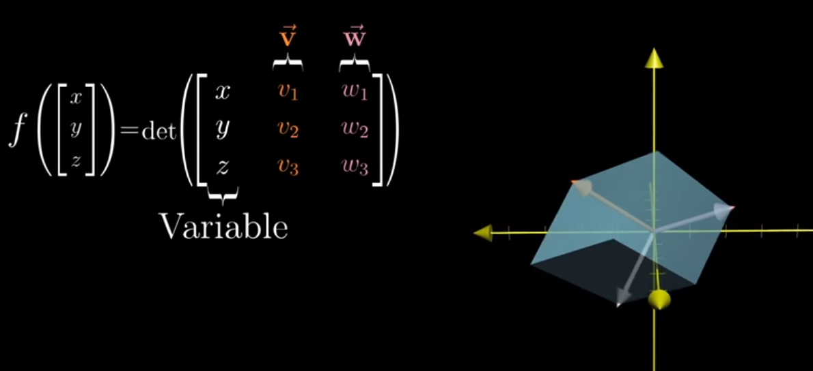
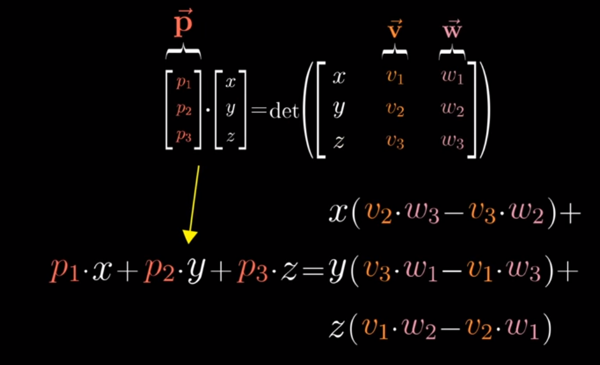
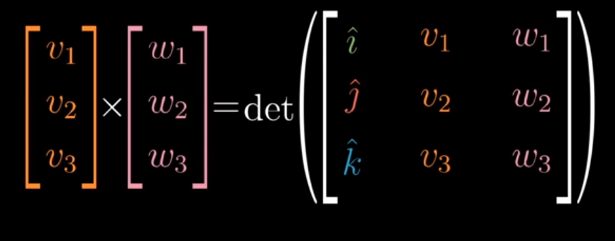

Cross Products
Overview
In his video on cross products, 3blue1brown kicks off by sharing that the cross product between two vectors v and w is the area of a parallelogram created by affixing each vector to the end of the other. Mathematically, this is equivalent to the determinant.
from IPython.display import Image
Image('images/cross_product_almost.PNG')
However, halfway through the video, he admits that this definition was simply to prep your understanding for the actual concept.
In reality, the cross product is a vector, not a number, that has the following properties:
- Its magnitude is still the value of the parallelogram’s area
- The resulting vector
pwinds up being perpendicular to bothvandu - The direction that
ppoints coincides with the right-hand rule– correctly for positive values, opposite that for negative
Image('images/right_hand_rule.PNG')
This was a pretty simple example to ground our intuition. Because v and w laid flat on the XY plane, the resulting normal vector, p, will simply point up the z axis.
Calculating p gets a bit more complicated to work out when v and w aren’t laid out so neatly. However, we’ll eschew the “just memorize it” formula we learned in undergrad and depend on numpy to do the math.
Instead, let’s unpack 3b1b’s intuitive understanding between cross products and linear transformations.
Math Wizardry
The following tangent leans hard into the first bullet of our cross product definition, “the magnitude of p is equal to the value of the area of the parallelogram spanned by v and w“
He then defines a problem and just asks us to go with it. You should, too, because it works.
Given that the volume of a parallelepiped is the determinant of the matrix of the 3 vectors, can we devise a function
f, that finds the volume of the solid, for a constantvandwand a given vector[x y z]T?
Image('images/magic_function.PNG')
Couple things to note right away:
- This function is linear– because
vandware held constant, we only ever consider one variable at a time - This function maps a vector in 3 dimensions to the number line in 1D
Recognizing the linearity is critical, as it allows us to reframe the left-hand side as finding some 3-dimensional vector, p, to multiply on the left of [x y z]T to get the value on the right.
Moreover, due to our conversation of “duality” in our notebook on the Dot Product, we can express this same left-hand side as
np.dot([p1 p2 p3].T, [x y z].T)
And so by construction this equation has the special property that the vectors v, w, and p (orange, pink, red) stay completely the same, regardless of how our variable vector in white changes.
Image('images/any_vec_1.PNG')
Image('images/any_vec_2.PNG')
Image('images/any_vec_3.PNG')
Geometry Wizardry
As constructed, the right-hand side of the equation is formula for the volume of a parallelepiped.
Geometrically, we know that the area of a parallelogram is equal to the height times the width. Expanding, the volume of a similarly-skewed prism is going to be the area of the base times the height.
We can easily calculate the area of the base by taking the determinant of [v w], but how do we determine the height of the overall shape?
The answer jumps out soon as we represent this visually.
Finding the height of the parallelepiped has the nice property of also finding the vector that’s normal to both v and w (in our definition of the cross product).
Image('images/parallelepiped.PNG')
If we define a unit vector u that’s perpendicular to the base, then we can summarize the right-hand side as
volume = np.dot(u, [x y z]T) * area_of_base
Reintroducing the left-hand side, we have
np.dot(p, [x y z]T) = np.dot(u, [x y z]T) * area_of_base
Reducing, we have
p = u * area_of_base
Which, to recap, perfectly describes our cross-product in that it:
- Has magnitude equal to the area spanned by
vandw - Is perpendicular to the plane spanned by them (by construction of
u)
Equations
At a term-by-term level, this looks like
Image('images/cross_product_formula.PNG')
which is very similar to the “just learn it, nerd” form that I learned years ago
Image('images/cross_product_formula_easy.PNG')